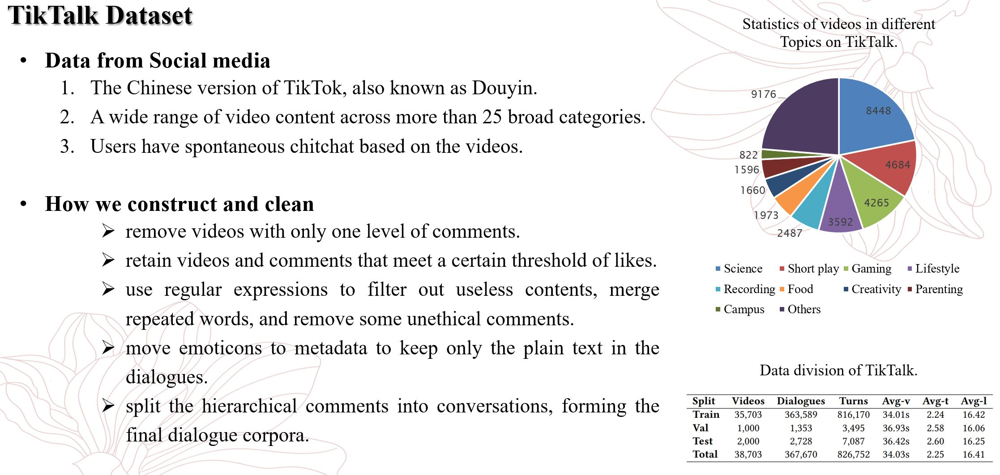
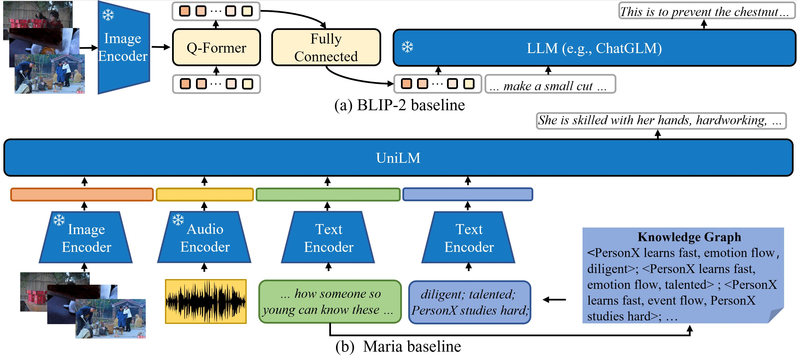
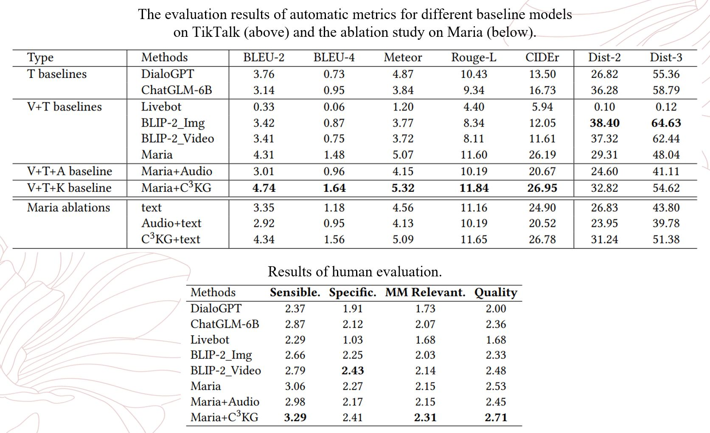
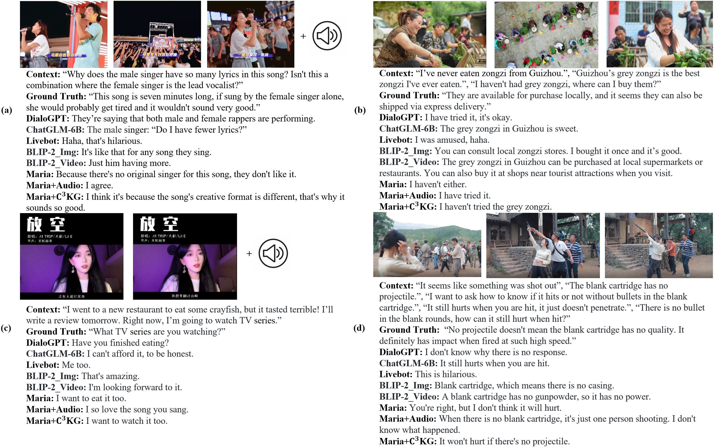

So, why do we want to build a new multi-modal dialogue dataset? We know that the ability to perceive and interact with multi-modal information is an important aspect of dialogue agents moving towards AGI. However, we find that previous dialogue datasets still have some gaps compared to real-world multi-modal chitchat scenarios. In real-world scenarios, participants engage in spontaneous conversations based on shared experiences of multi-modal information. Moreover, these scenarios involve diverse context that guides personalized and varied conversation content. To address these gaps, we present TikTalk.
We collect data from the Chinese version of TikTok, which offers a wide range of video content across more than 25 categories. After watching the videos, users can leave comments and replies. As shown in the figure on the right, apart from the science category, videos depicting real-life situations constitute the majority. After acquiring the raw videos and comments, we perform various cleaning steps, such as applying a threshold for the number of likes to filter the videos and comments based on user engagement. Finally, we obtain the statistics shown in the lower-right table: Our dataset comprises a total of thirty eight thousand videos and three hundred and sixty seven dialogues. The statistics also include information on dialogue turns, video duration, and sentence length.
First, in the upper-right table, we compared the proportion of responses originating from different context across four dialogue datasets. Annotators judge whether they cannot understand a response if a specific type of context is missing. The types of context considered are vision context, audio context, text context, and external knowledge. In the example on the left side, we highlight the parts of the responses that originated from a specific context using corresponding colors. For instance, in Session 2, the level 2 response is based on vision context, while the level 3 response relies on external knowledge. It is evident that in Openvidial, the proportion of vision context is very low, which indicates that it may not be suitable for evaluating multi-modal dialogue capabilities. The vision context proportions in IGC are similar to TikTalk, while our proportion of external knowledge-based responses is higher.
Next, we explore how these proportions change as the level of utterance goese deeper. The results, depicted in the lower-right figure, demonstrate that as the number of dialogue turns increases, the proportion of information from multi-modal context in TikTalk tends to stabilize. In contrast, the proportion in IGC gradually decreases, approaching that of text-only dialogues.
Next, we propose a multi-modal chitchat task based on TikTalk, which involves generating an ideal reply considering textual, visual, and audio context. In this task, we identify three challenges. The first challenge is the integration of multiple modalities. Since our dialogues are based on videos, the task requires perceiving and understanding various contextual cues and their interactions The second challenge is human interests. In a rich information environment, different individuals focus on different points of interest. Models need to capture the multi-modal information relevant to the textual context. For example, some users are interested in the reason for cutting chestnuts, while others focus on the explosion scene of popcorn. The third challenge is external knowledge. We categorize external knowledge into two types: general knowledge, such as "cutting a chestnut before roasting it prevents it from bursting during frying," and personalized knowledge related to users or bloggers, such as "she learns many skills before shooting videos."
The image shows two main multi-modal models we employed. The top one is the BLIP-2 framework, which utilizes adapters to connect visual features with a large language model. The bottom one is based on Maria, where we extract features from different types of context and input them into a transformer for fusion. For external knowledge, we introduce a conversational commonsense knowledge graph called C3KG, which matches relevant knowledge based on the textual context. For example, from the context "I don't know how someone so young can know these things," we obtain knowledge related to diligence, talent, and hard work to assist in response generation.
The automatic metrics include measures of similarity and diversity, while the human evaluation encompass metrics for assessing rationality, specificity, multi-modality relevance, and overall quality.
Examples of generated response from models. (a) Two singers are singing on the stage. (b) Some people are making zongzi. (c) A video blogger is recording a new song. (d) An actress is learning how to use a prop gun from the crew.

@article{lin2023tiktalk,
title={TikTalk: A Multi-Modal Dialogue Dataset for Real-World Chitchat},
author={Lin, Hongpeng and Ruan, Ludan and Xia, Wenke and Liu, Peiyu and Wen, Jingyuan and Xu, Yixin and Hu, Di and Song, Ruihua and Zhao, Wayne Xin and Jin, Qin and others},
journal={arXiv preprint arXiv:2301.05880},
year={2023}
}